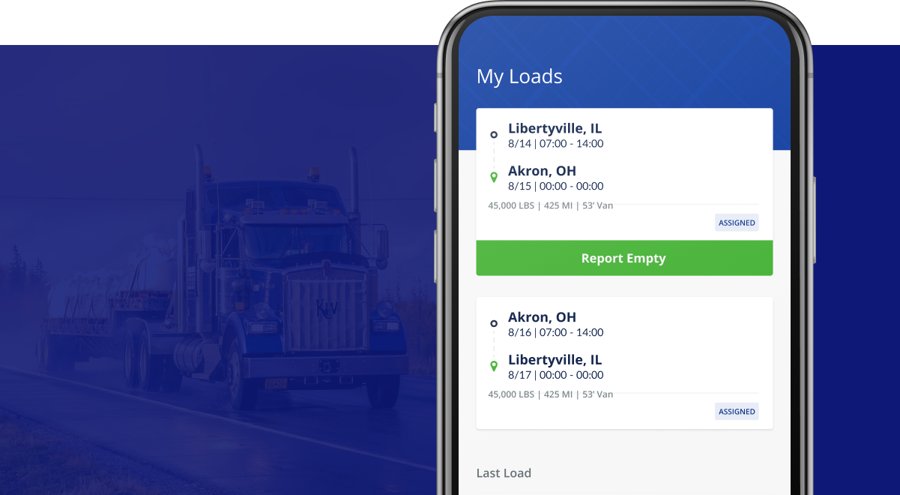

Echo Logistics
Vivid Seats is an online ticket marketplace where customers can sell and purchase tickets to a wide variety of events. Vivid Seats came to Eight Bit looking to redesign the mobile app UI and create a design system.
The previous app had a simple and utilitarian aesthetic and Vivid Seats was hoping to inject a bit more energy into the look and feel. That being said, this project was more than adding a new coat of paint as we redesigned and optimized interactions and user flows. I played a key role in the entire process from initial concept pitch, project planning, workshop facilitation, user research, design, prototyping, and client presentation.
🔎 Activities & Accomplishments
- Redesigned the Vivid Seats browsing and shopping experiences. Our intention was to keep users engaged longer on Vivid Seats by making it easier to find a relevant events and concerts they might be interested in.
- Planned and helped faciliate working sessions, feedback cycles, and workshops to align stakeholders across both teams.
- Created and presented multiple concepts and design iterations to stakeholders including product and design VPs and the CEO.
- Overhauled the brand with new visuals, color palette, and typography to add energy and excitement throughout the app experience
🎉 Outcomes & Impact
- After a year of development, the new design was released to the app stores and millions of customers.
- We saw a 30% increase in user order conversion. Basically our customers were engaging and interacting more often with the new experience.
- We saw a 45% increase in app screens per session. Users were browsing and see more events during the time they spent with the app.
- This project was a success for Eight Bit, the client was very satisfied with our work, and the project became a case study for future business.
Design of the core experience of finding and searching for events, filtering, recommendations, and date, time and seat selection. Our goal was to help our customers find the perfect seat and tried to put these features easily within reach. We iterated on these features over multiple design sprints.
I helped plan and facilitate working sessions, feedback and critiques, and workshops to align stakeholders.
We wanted to see if our new design was resonating and to uncover any usability issues. We tested with a small group of 10 participants. This feedback further helped us refine the design.